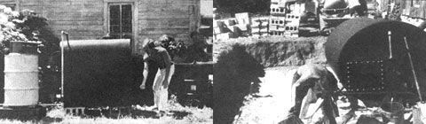

Jim Burgel is a young man who became interested in the production of methane from waste a year or so ago . . . so interested that he's now visited THE Mother Earth News (restricted) digester in Indiana, Alton Eliason's and Joe Pelliccio's composter in Connecticut (see MOTHER NO. 24 for photos of both units), and several other methane experiments around the country. He's also worked on a few installations of his own and-as the following October 1974 letter from Jim indicates-young Mr. Burgel has some definite ideas about building, financing and operating alternative energy equipment.
Dear MOTHER:
Enclosed are snapshots of the two methane digesters I constructed this summer. The small 285-Vallon unit (it cost me-excluding hosting elements-about $28.00) has been sold to the Kalamazoo Nature Center. It's heated by two sources not shown in the photo: [1] a copper coil along the digester's floor which is connected to a 4' X 8' flat-plate solar collector and [2] an electric hosting element. The electric heater-which is powered by a Dunlite wind generator installed by Al O'Shea of Environmental Energies, Inc.-is not immersed directly into the slurry. Rather, it's fitted to a two-inch pipe filled with water and mounted at a slight angle. A pressure relief valve is inserted at a filler plug opposite the side of the element and the 2" pipe works like a miniature radiator.
Progress on the larger, 1,000-gallon digester has been rather sluggish due to the fact that I'm building it with dollars I earn on part-time jobs. Actually, the project was supposed to be financed with a $1,000 university grant . . . but there were so many strings attached (I must attend class and pay for tuition, books, etc.) that I've only had about seventy-five actual university dollars to work with.
This financial disappointment, however, has only served to strengthen my determination-come hell or high water!-to go ahead and finish the big digester. As a result, I've become intimately acquainted with every junkyard in southwestern Michigan and, whenever I see a chunk of steel lying by the side of the road, I collect the metal and keep it handy for the time I might need it . . . whether for this project or the next.
Thanks to my scrounging, I've just finished an excellent 4' X 8' flat-plate solar collector for the 1,000-gallon methane plant. It cost me a whopping $8.20 for everything! I found the collector's tubing in a junkyard scrap heap. It's of absolutely superior quality and I guess it was originally used to circulate steam through vats of molten metal in an industrial plating operation.
The flat-plate collector will be a secondary heat source (that backs up a gas-fired side-arm heater like the one on MOTHER's methane plant) and the hot water it produces will circulate through 48 feet of one-inch pipe inside the digester . . . which will be insulated with three inches of polyurethane scrap from Upjohn's in Kalamazoo.
The photo of the big plant shows the 1,000-gallon digester in a pit over which we'll erect a greenhouse. Since the picture was taken, I've put up five courses of cement blocks for the greenhouse and I'm starting on the rafters. I have a 275-gallon tank mounted on a chassis (honey wagon) in which we'll haul spent slurry from the methane plant to eight acres of gardens. Gas created by the plant will be stored in a 1,200-gallon wooden-staved fruit juice tub ($30.00) sunk in the ground and topped by an upside-down 1,000-gallon steel tank ($20.00) which acts as a floating collector.
All in all, I've spent in the neighborhood of $420 on my alternative energy experiments this summer. I feel pretty good about that . . . especially after seeing the "alternative energy projects" (what a laugh) recently constructed at another college here in Michigan.
That school (I won't embarrass it by mentioning its name) received $12,000 from the National Science Foundation to carry out its energy research. As usual in these big buck government deals, there has been more dollars than sense involved. One follow-got this!-spent $1,300 on a 110-gallon anaerobic digester which didn't even work!!! I was truly stymied at how the hell anyone could blow so much money and not have anything to show for it.
The same school also spent a ghastly $2,700 for a 4' X 8' flat-plate solar collector and the people involved were quite smug about all my inquiries: "How much did you pay for this pump?" "Why did you buy all now hardware? Why not got your components from a salvage yard at one-tenth the price?"
Once I had figured out that the copper piping (with radiator fins) alone in their collector had cost $612 (without tax) I made the statement that, "if these alternative energy idea are going to mean anything to the folks who need them, then they'll have to be built and financed alternatively in the given socio-economic-political structure . . . that is, scrounged and financed from junk."
This really made my hosts indignant and they told me to got off their government property and please (one could easily tell a nerve had been struck) leave the premise& To which I replied, "Who, pray tell, is the government?" With this, I put my arm around a friend who was with me and said, "Hello, Government How are you today?"
The others in the group failed to appreciate my humor.
|
 |
|
|